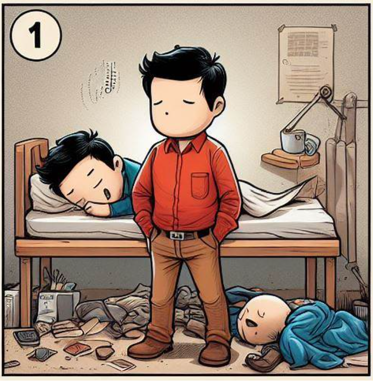
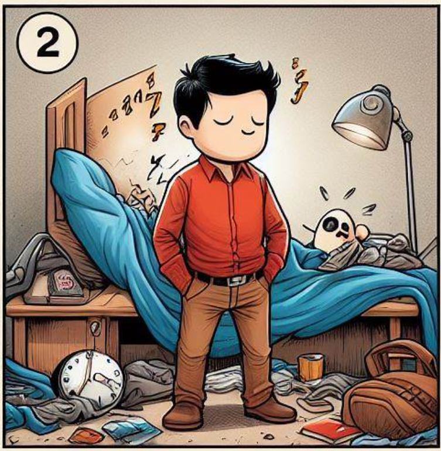
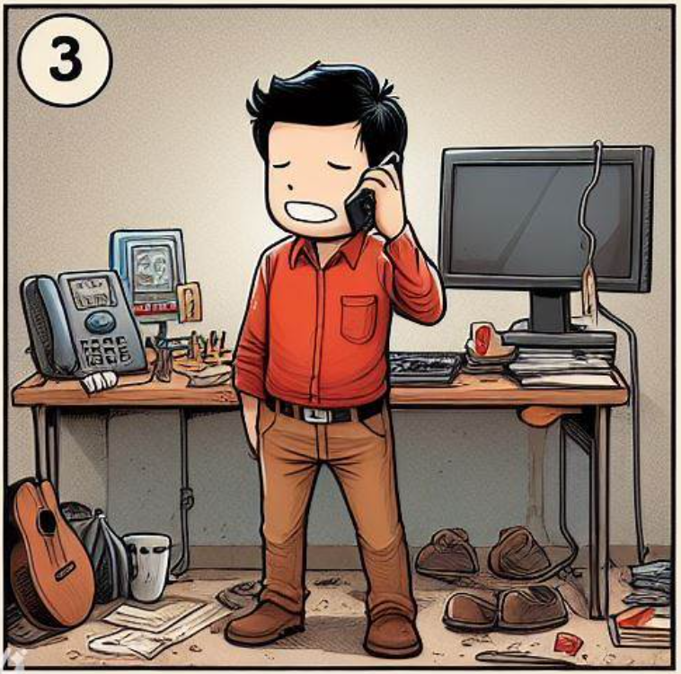
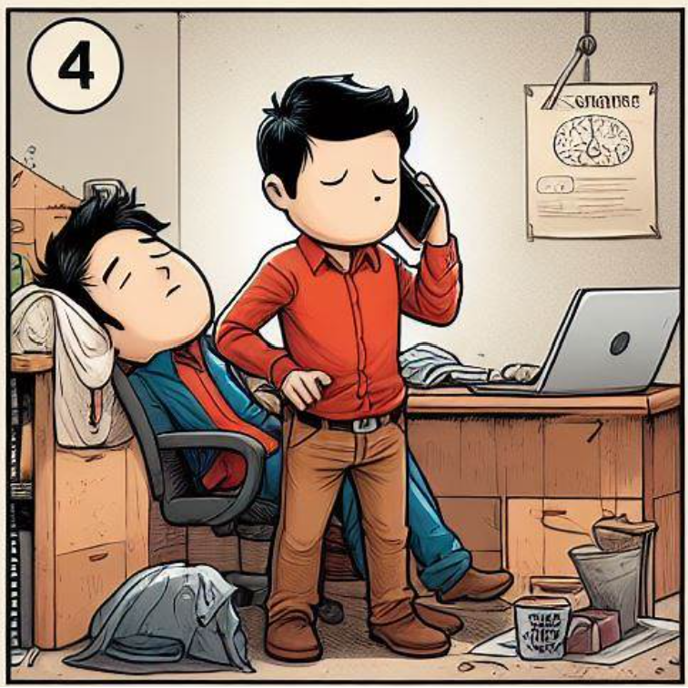
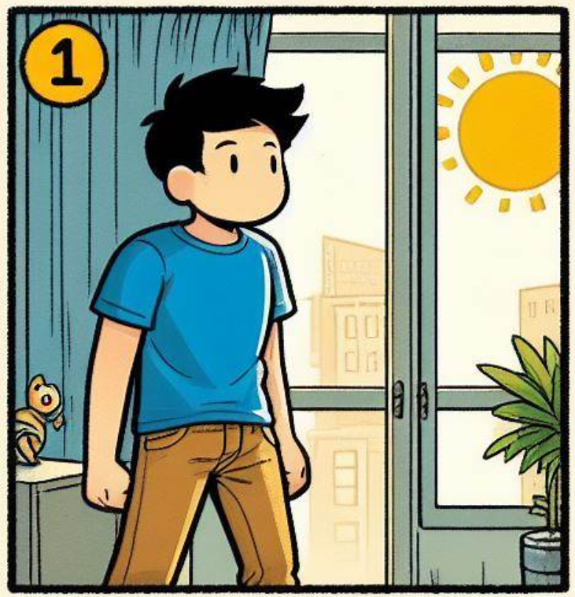
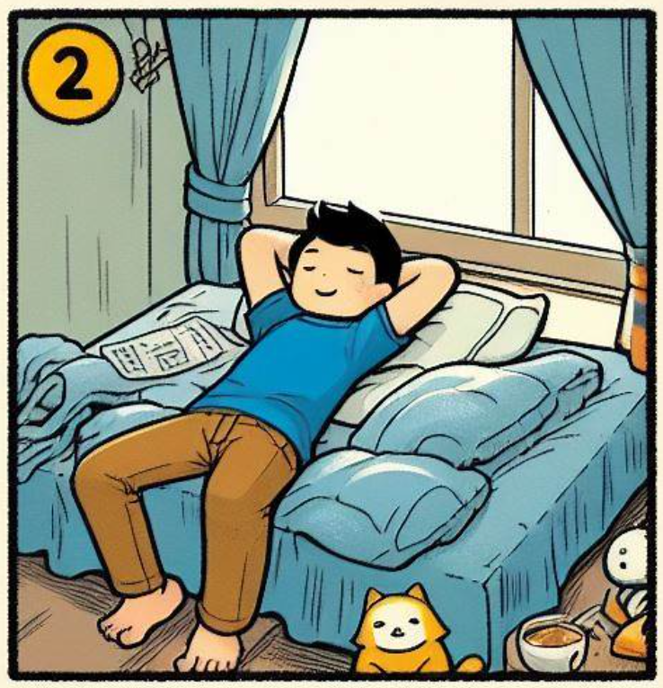
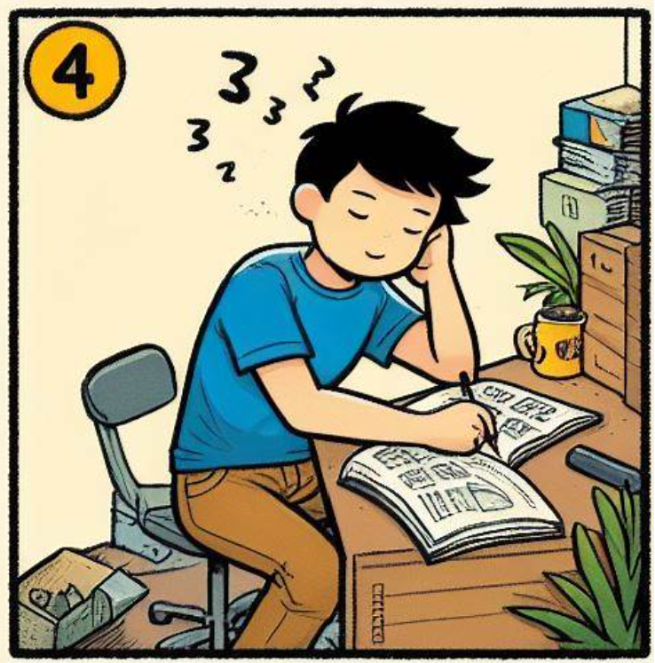
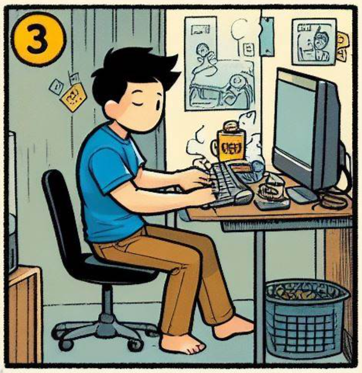

Vergleich Max Muster und Franz Faul
Franz Faul

Franz Faul ist ein typischer Schüler, der sich nicht wirklich für die Schule interessiert. Er hat keine Ziele und weiss nicht, was er nach der Schule machen will. Er hat keine Motivation und ist deshalb auch nicht bereit, sich anzustrengen. Er hat keine Ahnung, wie er lernen soll und hat auch keine Lust, es zu lernen.

Franz hat viel zu lange Videospiele gespielt und geht sehr spät ins Bett. Er schläft nicht wie empfohlen 8 Stunden, sondern nur 5 Stunden. Er ist deshalb am nächsten Tag sehr müde und kann sich nicht konzentrieren.

Franz lässt sich immer wieder ablenken, wenn er versucht zu lernen. Er telefoniert mit jedem, der ihm gerade anruft. Er schaut sich Videos auf Youtube an und schreibt mit seinen Freunden. Er hat keine Ahnung, wie viel Zeit er mit Ablenkung verliert.

Seine Familie ist ihm dazu noch ein schlechtes Vorbild, indem sie sich auch ablenken lassen und den Arbeitsplatz nicht mit dem Rest in der Wohnung trennen. So merkt der Körper nicht mehr, ob er sich gerade in der Freizeit oder in der Arbeitszeit befindet und lässt sich deshalb leichter ablenken.
Max Muster

Max Muster wiederum ist ein Schüler, der sich für die Schule anstrengt. Er hat Ziele und weiss, was er nach der Schule machen will. Er hat Motivation und ist deshalb auch bereit, sich anzustrengen. Er weiss, wie er lernen soll und hat auch Lust, seine Ziele damit zu erreichen.

Max ist schlau und achtet deshalb gut darauf, dass er genug Schlaf bekommt. Er hat sich auf der Webseite Tips4Study informiert und herausgefunden, wie viel besser man ausgeschlafen lernen und allgemein funktionieren kann.

Max weiss auch, dass man sich weniger ablenkt, wenn es weniger Ablenkungsmöglichkeiten gibt. Deshalb hat er sich auf seinem Handy eine App installiert, die ihm hilft, sich weniger abzulenken.

Max macht regelmässig zwischen den Lernperioden Pause und bleibt stets fokusiert. In den Pausen geht er nicht an sein Handy, da er bereits an seinem Laptop mit Quizlet gelernt hat.
Sei wie Max und nicht wie Franz!

Nic Sonderegger
Autor des Artikels